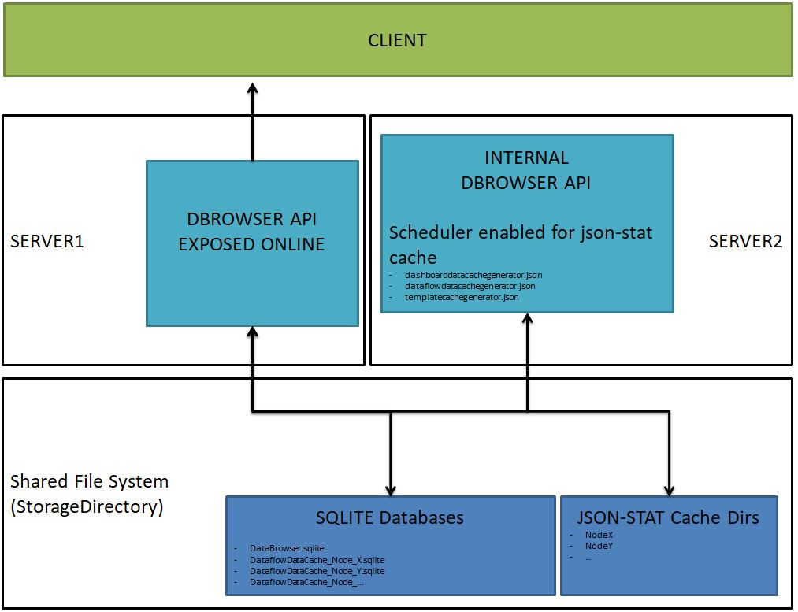

Configurations¶
The client application is already configured to communicate to the web service listening on http://localhost/databrowserhub/. The endpoint address can be set in the path [ROOT_IIS]\databrowser\config.json
The json file appsettings.json, included in the databrowserhub folder, contains all the information regarding paths and settings of the application. Let’s take a closer look to all the possibile configurations.
Storage Directory
It is possible to configure the path of the base directory dedicated to data (databases and cache files (json-stat format)); this will potentially allow 2 installations of Data Browser, one dedicated to front-end and one dedicated to cached data update, that share database and cache files.

This configuration is optional: if no base directory for storage is set, the software will automatically create a directory in the installation root directory.
"StorageDirectory": "C:/StorageDirectory"
DataflowDataCache
In this part of the configuration, the user defines all settings regarding the storage of the cache files (json-stat format) for dataflow data.
"DataflowDataCache": {
"Type": "NoSql",
"ConnectionString": "Data Source=DB/DataflowDataCache.sqlite;",
"IsEnable": true,
"SaveDataOnFile": true,
"SavedDataFilePath": "_DataflowDataFiles",
"Expiration": 604800 //Second
},
Specifically:
Type is the server storage’s type (supports only “NoSql”).
ConnectionString specifies the path of the sqlite database.
IsEnable (true/false) indicates if the Data Browser can use (or not use) the cache.
SaveDataOnFile specifies if the jsonstat will be saved in a separated file.
Expiration indicates the default value, in seconds, for the validity of the jsonstat in cache. If value is 0 (zero), cache is never generated. If the value is -1 cache never expires.
At application level, it is possible to disable cache by setting the flag IsEnable = false. By default Expiration is always set to -1
CatalogCache
In this part of the configuration, the user defines expiration for catalogs.
"CatalogCache": {
"Expiration": -1
},
It indicates the default value, in seconds, for the validity of the jsonstat in cache. If value is 0 (zero), cache is never generated. If the value is -1 cache never expires.
By default Expiration is always set to -1.
Database
In this part of the configuration, the user defines all settings necessary for the storage of information regarding the Data Browser (nodes, dashboards, views, templates, users and so on).
"Database": {
"DbType": "SQLite",
"ConnectionString": "Data Source=DB/DataBrowserDB.sqlite;",
"UseMigrationScript": true
},
Specifically:
DBType is the server storage’s type.
ConnectionString is the path of the sqlite database concerning the storage directory.
UseMigrationScript true/false indicates if the new version of the software can automatically update the used database (recommended value is true).
Geometry Database
In this part of the configuration, the user defines the path of the database needed for the default geometries.
In the package provided, for example purposes, there are geographical data referring to Eurostat NUTS and ISTAT Italian municipalities.
"GeometryDatabase": {
"DbType": "SQLite",
"ConnectionString": "Data Source=DB/Geometry.sqlite;"
},
It is also possible to customize the geometries that overwrite the default configuration, simply by adding in the same directory some databases in the same format as “GeometryDatabase”, whose name must respect the following format: Geometry_Node_{NodeID}.sqlite
The geographical database in sqlite is structured through a dedicated database, containing the table “Geometry” with the following fields:
UniqueId: unique numeric identifier (mandatory)
Id: unique identifier, used to make the join with codelist codes (mandatory)
Label: territory label; this information is optional and not used by the application
Country: country identifier; this information is optional and not used by the application
NutsLevel: NUTS level; this level is used by the application. It is a string which can be translated by the client, whose key must be in the format “nutsLevel{NutsLevel}”. Here a possible example:
. . . "nutsLevel0": "Country", "nutsLevel1": "Territorial divisions", "nutsLevel2": "Regions", "nutsLevel3": "Province", "nutsLevel4": "Municipality", . . .
Source: data source; this information is optional and not used by the application
WKT: territory geometry in WKT format; for more details about the format see: https://en.wikipedia.org/wiki/Well-known_text_representation_of_geometry
AlternativeIds: alternative identifiers for the current territory. In case the same territory is present in the codelist with different identifiers, in order to avoid adding more rows with the same geometry, in this field it is possible to insert the concatenation of the identifiers so that the system can receive them.
If the user needs to specify more than one field, the “pipe” | separator must be inserted between the values.
CORS policies
In this part of the configuration, the user decides if CORS policies must be enabled or not (for more information on CORS check https://en.wikipedia.org/wiki/Cross-origin_resource_sharing).
"General": {
"CORS": {
"Enable": true
},
External and internal rules
"EndPointResponseLogForDebug": false,
If true and log level is “debug”, all responses from NSI will be saved on log file.
"InternalRestUrl": "",
Specifies the URL used for calling the DataBrowserAPI from the installation server.
"ExternalRestUrl": "http://localhost/databrowser/api/",
Specifies the URL used for calling the DataBrowserAPI from outside the installation server.
"ExternalClientUrl": http://localhost/databrowser
Specifies the URL used for calling the Data Browser frontend from outside the installation server.
Authentication
Some functionalities, exposed via API, are accessible by all types of users (anonymous and authenticated), others, on the other hand, are subject to profiling. In this part of the configuration, settings regarding login for authenticated users are defined.
"Authentication": {
"IsActive": true,
"Key": "8CF07358F9BB4CA98C0EE4D26A97858C",
"Issuer": "DataBrowserIssuerApi",
"Audience": "DataBrowserApiUser",
"JwtTokenLifeTime": 15, //Minute
"EnableRefreshToken": true,
"EnableAuditLogin": false,
"TryLoginMax": 3,
"TryLoginTime": 60,
"DelayLogin": 3000,
Specifically:
IsActive if set to false, all APIs will be accessible from anonymous users.
Key represents the symmetric security key which is used for the generation of the hash token needed for login. The usage of the key is necessary for security encryption.
Issuer identifies the principal that issued the token.
Audience identifies the recipients that the token is intended for. If the principal processing the claim does not identify itself with a value in the “audience” claim when this claim is present, then the JWT MUST be rejected.
JwtTokenLifeTime specifies the time to live of the generated token.
EnableRefreshToken tells the system to regenerate a new token from cookie instead of recalling token with user and password.
EnableAuditLogin saves all attempts to login by all user on database. Information are saved in the AspNetUsersAudit table of the applicative database.
TryLoginMax sets the maximum number of login before activating the system of delay response.
TryLoginTime sets time (minutes) in which incorrect logins are considered.
DelayLogin (ms) specifes the time of delay of login response (time is incremented by this value for each invalid login).
Refresh cookie options
In this part of the configuration, the user defines the cookie’s settings to refresh the token.
"RefreshCookieOptions": {
"HttpOnly": true,
"SameSite": "Lax", //null, "Unspecified", "None", "Lax", "Strict"
"RefreshTokenLifeTime": 14400 //Minute
Specifically:
HttpOnly is recommended to be always set to true.
SameSite: Lax is recommended. If it is necessary to use crossdomain cookie, set it to “None” and use an Https connection. For all possibile values of the SameSite parameter, check https://developer.mozilla.org/en-US/docs/Web/HTTP/Headers/Set-Cookie/SameSite
RefreshTokenLifeTime defines validation time (in minutes) of the cookie.
User policy for password
In this part of the configuration, the user defines settings for password policy and mail in order to enable the user to create or change password.
"UserPolicy": {
"PasswordRequiredLength": 8,
"PasswordRequireNonAlphanumeric": true,
"PasswordRequireLowercase": true,
"PasswordRequireUppercase": true,
"PasswordRequireDigit": true
}
For the creation/change password configuration, it is necessary to set SMTP information important for email exchange from DataBrowserAPI.
"Mail": {
"Smtp": {
"Host": "",
"Port": 1234,
"Secure": false,
"Username": "user",
"Password": "pass"
},
"DefaultMail": "info@databrowser",
"Templates": {
"ResetPassword": {
"Sender": "",
"Subject": "Recovery Password",
"Message": "config/Template/recoveryPassword.html"
}
In particular:
Mail contains the information needed to configure the SMTP server for email exchange in case of recovery/change password necessity. In particular, the “Secure” field specifies if there is a SSL protocol or not.
DefaultMail is the default sender’s email address.
Template contains all html templates used for sending email. The only available template is ResetPassword. In this section, “Subject” is the subject of the email sent to reset the password. “Message” is the body of the email sent in html format. Usually the path to the html is specified. In this case the folder must be inside of DataBrowserAPI folder. This message can be overwritten by UserLang used from request. If the folder contains the config/Template/recoveryPassword.{UserLang}.html, that will be used as file for the message. The file is in HTML/CSS format and it can be modified as needed from the one delivered in the installation package.
Swagger
In case this option is set to true the user can see the requests defined in Data Browser and that can be sent to the application. If this option is missing or set to false swagger is disabled.
"Swagger": true,
Special cache management
When talking about cache we refer to data stored so that future requests for that data can be served faster; the data stored in a cache might be the result of an earlier computation or a copy of data stored elsewhere. In this application, cache is very important especially when considering filterable dashboards that hold territorial dimensions and allow users to query results by changing these dimensions. For this reason timing is very important and a key component for a responsive and functional application.
In order to manage these requests, we consider services for handling cache regeneration depending on whether we are considering filterable or non-filterable dashboards (see section Dashboards for more information).
In particular, in the appsettings.json file a scheduler is defined in which a timer is set to specify the interval to check if there is any work to do (usually five minutes is the recommended interval 00:05:00).
This scheduler picks the four files present in the config folder (config\dashboarddatacachegenerator.json, config\dataflowdatacachegenerator.json, config\cataloginmemorycachegenerator.json, config\templatecachegenerator.json) and launchs services.
"Scheduler": {
"IsEnable": true,
"Timer": "00:05:00",
}
In particular:
DashboardDataCacheGenerator refreshes all dataflows assigned to static not-filterable views in a dashboard.
The service settings are specified in file: config\dashboarddatacachegenerator.json which contains the following lines:
{
"DashboardDataCacheGenerator": {
"IsEnable": true,
"StartTime": "20:30:00",
"Days": [ 0, 1, 2, 3, 4, 5, 6],
}
}
In particular:
IsEnable is true if the service is enabled.
StartTime defines the starting time.
Days ndicates the day the worker runs (0 = Sunday and 6 = Monday).
CatalogInMemoryCacheGenerator refreshes cache’s catalog for all active nodes.
The service settings are specified in file: config\cataloginmemorycachegenerator.json which contains the following lines:
{
"CatalogInMemoryCacheGenerator": {
"IsEnable": true,
"StartTime": "10:15:00",
"Days": [ 0, 1, 2, 3, 4, 5, 6 ]
}
}
In particular:
IsEnable is true if the service is enabled.
StartTime defines the starting time.
Days ndicates the day the worker runs (0 = Sunday and 6 = Monday).
TemplateCacheGenerator regenerate the cache on the data for all templates present.
The service settings are specified in file: config\templatecachegenerator.json which contains the following lines:
{
"TemplateCacheGenerator": {
"IsEnable": false,
"StartTime": "13:20:00",
"Days": [ 0, 1, 2, 3, 4, 5, 6 ]
}
}
In particular:
IsEnable is true if the service is enabled.
StartTime defines the starting time.
Days ndicates the day the worker runs (0 = Sunday and 6 = Monday).
DataflowDataCacheGenerator refreshes all dataflows configured in the DataflowDataCache section config.
The service settings are specified in file: config\dataflowdatacachegenerator.json which contains the following lines:
{
"DataflowDataCacheGenerator": {
"IsEnable": true,
"StartTimer": "20:30:00",
"Days": [ 0, 1, 2, 3, 4, 5, 6],
"DataflowsRefresh": [
{
"Id": "Agency+Id+Version",
"Dimensions": [ "DimensionId" ],
"NodeCode": "NodeId",
"GruopByNumber": {
"GroupSize": 20
}
}
}
}
In particular:
DataflowsRefresh is an array that contains the list of all dataflows that need to be refreshed in cache.
Dimensions can have only one value and defines the dimension’s ID to refresh.
NodeCode defines the node’s ID that contains the dataflowid to refresh.
GroupByNumber contains the configuration for grouping the number of the items of the dimensions’ codelist to get the data that needs to be inserted in cache.
GroupSize defines the number of codes that will be send for each request to the endpoint.
Logconfig
In order to configure logs it will be sufficient to set the parameters in the file “datarowserhub/config/base/logconfig.xml”.
This configuration allows the user to distinguish web application logs from those of the scheduled services. Possible log’s level that can be set are: Debug, Information, Warning, Error.
Here an example of part of a log configuration file:
<?xml version="1.0" encoding="utf-8"?>
<configuration>
<appSettings>
.
.
.
<!-- Web Application Logger (DataBrowser.log) -->
<add key="log:serilog:using:File"
value="Serilog.Sinks.File" />
<add key="log:serilog:filter:ByIncludingOnly.expression"
value="RequestId is not null and Length(RequestId)
> 0" />
<add key="log:serilog:write-to:File.path"
value="DataBrowser.log" />
<add key="log:serilog:write-to:File.restrictedToMinimumLevel"
value="Error" />
<add key="log:serilog:write-to:File.formatter"
value="Serilog.Formatting.Compact.CompactJsonFormatter,
Serilog.Formatting.Compact" />
<add key="log:serilog:write-to:File.outputTemplate"
value="[{Timestamp:HH:mm:ss.fff}
{Application} {Level:u3}]
[{RequestId}]: {Message:lj}
{SourceContext} {NewLine}{Exception}" />
<add key="log:serilog:write-to:File.fileSizeLimitBytes"
value="4000000" />
<add key="log:serilog:write-to:File.buffered"
value="false" />
<add key="log:serilog:write-to:File.rollingInterval"
value="Day" />
<add key="log:serilog:write-to:File.shared"
value="false" />
<add key="log:serilog:write-to:File.retainedFileCountLimit"
value="31" />
<add key="log:serilog:write-to:File.rollOnFileSizeLimit"
value="true" />
.
.
.
</appSettings>
</configuration>
Export Excel
In this part of the configuration, the user can define all the settings required for the correct and useful functioning of the export to Excel for multidimensional tables.
"Export": {
"MaxExcelSheets": 50
"MaxColsPerSheet": 100,
"MaxRowsPerSheet": 1000
},
Specifically:
MaxExcelSheets is the maximum number of sheets to be created.
MaxColsPerSheet specifies the maximum number of columns per sheet.
MaxRowsPerSheet specifies the maximum number of rows per sheet.
Having to manage the occupation of resources on the server and waiting times for the end user, these configurations make it possible to limit the number of objects that can be exported by the user.
The limitations set are by default but can be modified according to specific needs.